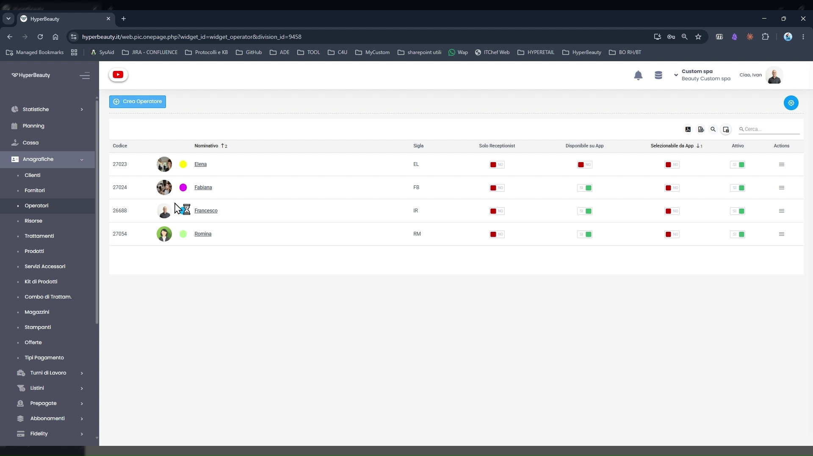
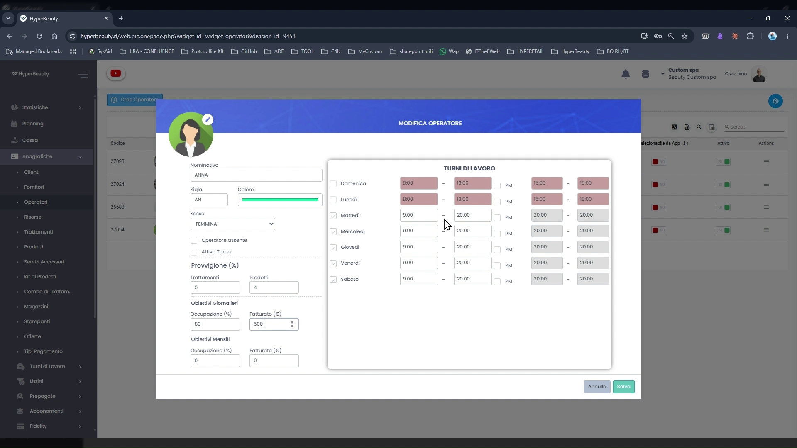
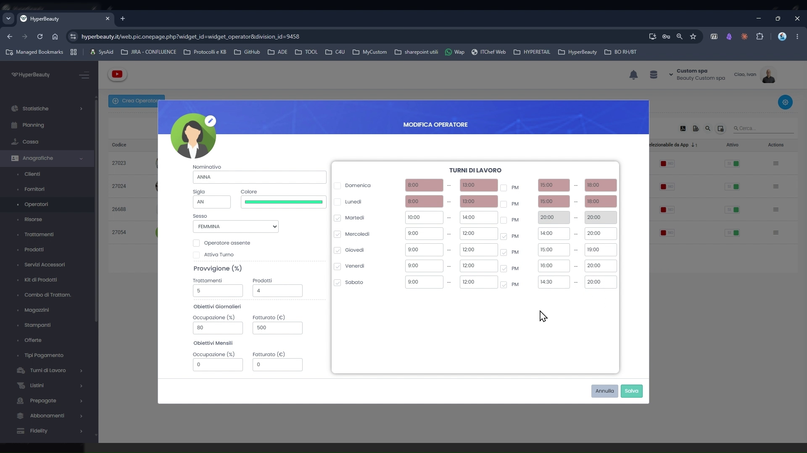
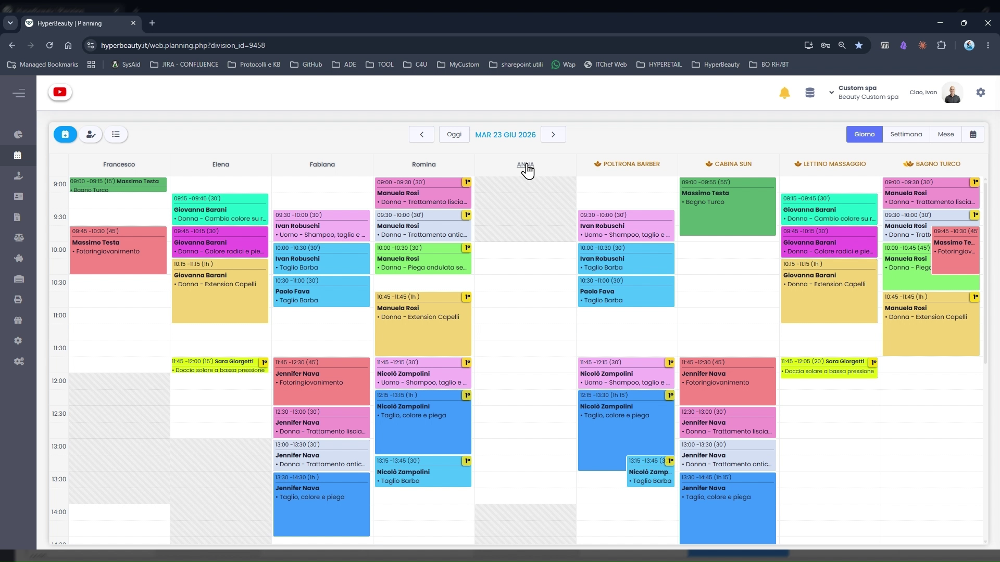

Creazione e Configurazione Operatori
Gli operatori sono le persone che erogano i trattamenti e compaiono come colonne colorate nell'agenda. Prima di poter creare appuntamenti è necessario configurare almeno un operatore con i propri orari di lavoro.
La lista operatori
Percorso: Menu laterale → Anagrafiche → Operatori

La schermata elenca tutti gli operatori configurati per la sede. Per ciascuno sono visibili:
| Colonna | Descrizione |
|---|---|
| Codice | Identificativo numerico univoco assegnato automaticamente |
| Nominativo | Nome, foto profilo e pallino con il colore agenda |
| Sigla | Abbreviazione (2-3 lettere) usata nei report e nelle stampe |
| Solo Receptionist | Se attivo, l'operatore non compare come colonna in agenda ma può gestire prenotazioni |
| Disponibile su App | L'operatore è prenotabile dai clienti tramite l'app BeWelly |
| Selezionabile da App | I clienti possono scegliere specificamente questo operatore in fase di prenotazione online |
| Attivo | Toggle per disabilitare temporaneamente l'operatore senza eliminarlo |
Per creare un nuovo operatore cliccare il pulsante + Crea Operatore in alto a sinistra.
Dati anagrafici e colore
Percorso: Anagrafiche → Operatori → + Crea Operatore
Il pannello di creazione/modifica è diviso in due sezioni: dati anagrafici a sinistra e turni di lavoro a destra.
Campi principali (pannello sinistro)
| Campo | Note |
|---|---|
| Nome e Cognome | Come appare in agenda e nei documenti |
| Colore | Selezionare un colore diverso per ogni operatore — è il colore della colonna in agenda |
| Tipo | Operatore (eroga trattamenti) o Receptionist (gestisce prenotazioni, non compare in agenda) |
| Priorità | Ordine di visualizzazione delle colonne in agenda (1 = prima colonna a sinistra) |
| Sigla | 2-3 lettere usate nei report (es. EL per Elena, FB per Fabiana) |
| Operatore resoconto | Operatore di riferimento per i report di gruppo |
Colori univoci
Assegnare a ogni operatore un colore diverso permette di riconoscere a colpo d'occhio chi è occupato e quando, senza leggere il nome. È una delle prime cose che i dealer mostrano ai clienti durante la demo.
Turni di lavoro individuali
Il pannello destro della scheda operatore contiene la griglia Turni di Lavoro.

Per ogni giorno della settimana è possibile definire:
- Checkbox giorno — spuntare per abilitare il giorno lavorativo
- Orario mattina — ora di inizio e ora di fine turno mattutino
- Checkbox PM — abilitare il turno pomeridiano
- Orario pomeriggio — ora di inizio e ora di fine turno pomeridiano

Orari operatore vs orari sede
Gli orari dell'operatore definiscono la sua disponibilità individuale all'interno della finestra oraria della sede. Un operatore non può essere disponibile in fasce orarie in cui la sede è chiusa. Se ad esempio la sede apre alle 9:00, impostare un operatore dalle 8:00 non avrà effetto — l'agenda partirà comunque dall'orario di apertura sede.
Esempio turno spezzato:
| Giorno | Mattina | Pomeriggio |
|---|---|---|
| Lunedì | 09:00 – 13:00 | 15:00 – 19:00 |
| Martedì | 09:00 – 13:00 | 15:00 – 19:00 |
| Mercoledì | 09:00 – 13:00 | — |
| Giovedì | 09:00 – 13:00 | 15:00 – 19:00 |
| Venerdì | 09:00 – 13:00 | 15:00 – 20:00 |
| Sabato | 09:00 – 18:00 | — |
| Domenica | — | — |
Cliccare Salva per confermare. L'operatore appare immediatamente come nuova colonna nell'agenda.
Lista operatori aggiornata
Dopo aver creato tutti gli operatori, la lista mostra l'elenco completo con colori e sigle assegnate.
Gli operatori in agenda
Una volta salvati, gli operatori compaiono come colonne colorate nel Planning. Ogni appuntamento viene associato a un operatore specifico e visualizzato nella sua colonna.

Colori in agenda — due modalità
HyperBeauty supporta due modalità di colorazione degli appuntamenti, configurabili dall'icona ⚙️ nella barra superiore del Planning:
| Modalità | Descrizione | Tipico utilizzo |
|---|---|---|
| Per operatore (default) | L'appuntamento prende il colore dell'operatore. La colonna è monocromatica. | Centri estetici, SPA, istituti di bellezza |
| Per tipo di trattamento | L'appuntamento prende il colore del trattamento (es. colorazione = rosso, taglio = giallo, piega = verde). | Parrucchieri che vogliono vedere quanti trattamenti lunghi hanno in agenda |
Come cambiare modalità
Planning → icona ⚙️ → sezione Colori appuntamenti → selezionare la modalità. La modifica è immediata.
Aggiungere Moduli 3 o 6 operatori/risorse
Tutti i piani HyperBeauty: massimo 6 operatori + 6 risorse
Tutti i piani HyperBeauty includono fino a 6 operatori e 6 risorse. Se il salone ne ha di più, attivare il modulo opzionale "3 o 6 Operatori/Risorse aggiuntive" acquistabili da Custom4U.
Verificare sempre il numero di operatori attivi del salone prima dell'installazione per evitare problemi in fase di configurazione.
Riepilogo configurazione operatore
| Passo | Azione | Obbligatorio |
|---|---|---|
| 1 | Anagrafiche → Operatori → + Crea Operatore | ✅ |
| 2 | Inserire nome, scegliere colore univoco e sigla | ✅ |
| 3 | Impostare tipo (Operatore / Receptionist) | ✅ |
| 4 | Compilare turni di lavoro giornalieri | ✅ |
| 5 | Abilitare/disabilitare disponibilità su BeWelly | Facoltativo |
| 6 | Salvare e verificare la colonna in Planning | ✅ |
Documento a cura di Custom S.p.a. — HyperBeauty Training Program — Versione 1.0 — Giugno 2026